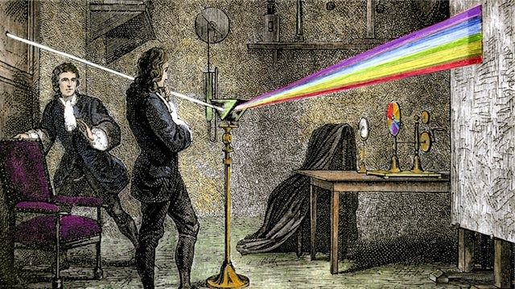
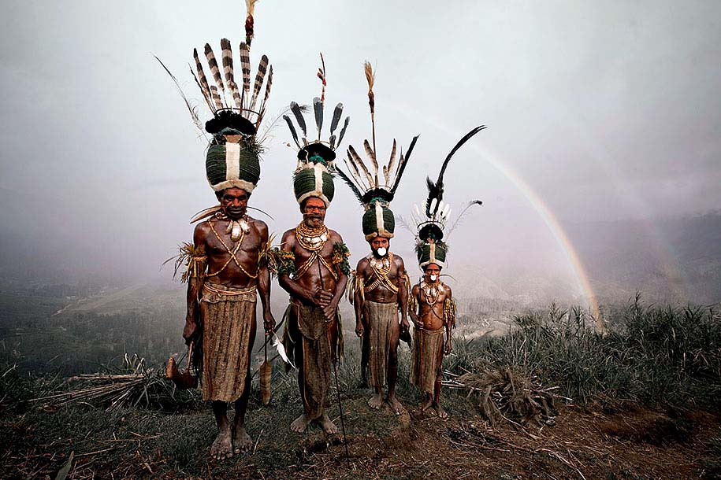
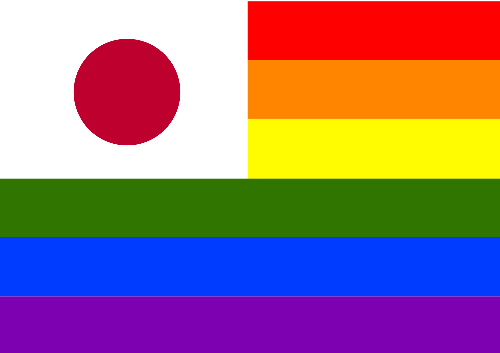
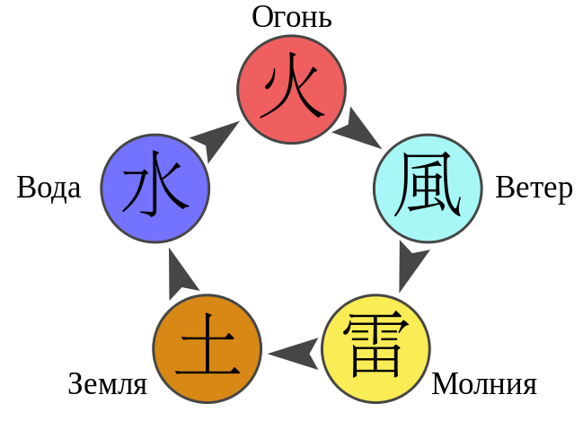

РАДУГА и количество ее цветов у разных народов мира
Сколько цветов у радуги? Казалось бы, детский вопрос. Каждый знает, что их всего семь – вспомните приговорки про «фазана» и «Жана-звонаря». Но не все народы согласны с этой «истиной». А если обратиться к научному подходу, то представление о семи цветах лопнет, словно мыльный пузырь.
Исаак Ньютон
Автором семицветной радуги является Исаак Ньютон. Правда, сначала он углядел в спектре только 5 цветов (красный, желтый, зеленый, голубой и фиолетовый), но позже, под влиянием моды на магические цифры, физик увеличил количество цветов до семи, что соответствует количеству нот в гамме и дней в неделе.
Африка
У некоторых африканских племен радуга 2-хцветная: светло-темная. Все потому что они ее боялись как огня. Её считали живым существом; в основном, змеёй. Народ эве представляет радугу как отражение в небе большого змея Аниево,— который выходит, чтобы найти пищу или воду. Если найти место, откуда выходит радуга, то можно разбогатеть, ибо только там можно найти драгоценные бусы «аггро». Считается, что радуга может причинить вред, наслать болезнь или даже убить
Япония
Японские дети убеждены, что у радуги 6 цветов. В японской радуге отсутствует зеленый цвет. До ХХ века в Стране Восходящего солнца прекрасно обходились без него, и лишь под влиянием всеобщей глобализации традиционный народ придумал особое обозначение для зеленого цвета: мидори. Правда, цвет этот и по сей день считается у потомков самураев не основным оттенком (как у нас «алый» - не особый цвет, а лишь оттенок красного). Там, где цвет четко должен быть обозначен, японцы по-прежнему скажут «Ао» (). Вот и получается, что в Японии дорогу переходят на сигнал светофора, а весной любуются появившейся нежной листвой, а летом приносят к столу свежую «синь» (не зелень) и сочные яблоки. Про неопытного новичка и русский, и англичанин скажут «зеленый», а японцы «ao-kusai», дословно «он пахнет .
Якутия
У якутов радуга трехцветная. Голубой, , фиолетовый и зеленый цвета они обозначают одним словом: «кюох». Даже якутская интеллигенция постоянно путает названия цветов. На гербе города Ленска красуется -желто-красная радуга.
Китай
У китайцев 5 цветов радуги. Количество цвнтов отвечает количеству стихий на нашей планете:
- Красный - огонь
- Голубой - ветер или воздух
- Желтый - молния
- Корисневый - земля
- - вода
Греция
Древние греки не различали синий цвет. В поэмах Гомера такой оттенок не встречается ни разу, небо бывает либо «железным» (видимо, серым), либо «медным» (золотистым), а море – «винноцветное» (предположительно, зеленое). У древних греков также была богиня радуги Ирида - посланница между мирами людей и богов.Кстати, в еврейском оригинале Библии также нет синего цвета.
Люди
Большинство людей может сходу назвать около 11 названий цветов, при этом в радуге реально различают 3-5.
Апельсин
Апельсин на самом деле не оранжевый. Его кожура поглощает все цвета из светового луча, кроме оранжевого. А нам фрукт кажется оранжевым лишь потому, что мы видим отраженный от кожуры оранжевый цвет.

Цвета
Истинное количество цветов радуги можно выразить парадоксом: «Нисколько или бесконечность». В природе цветов вообще не существует, они лишь плод нашего воображения. Однако, спектр непрерывен, он состоит из бесчисленного количества оттенков, вопрос лишь в том, какими словами их кодировать. Отдельный человек и человечество в целом проходит в своем развитии схожие стадии: от различения двух цветов (черного и белого) до создания радужной картины мира (через постепенное выделение сначала красного, затем желтого и зеленого, позже синего, затем коричневого цвета и, наконец, осознание как отдельных оттенков фиолетового, розового, оранжевого и серого). В языках народов мира в среднем имеется 100-150 названий цветов и их оттенков. Возможно, с развитием общества мы научимся различать новые оттенки спектра, и наша радуга станет многоцветной.
А сколько вы видите цветов в радуге?